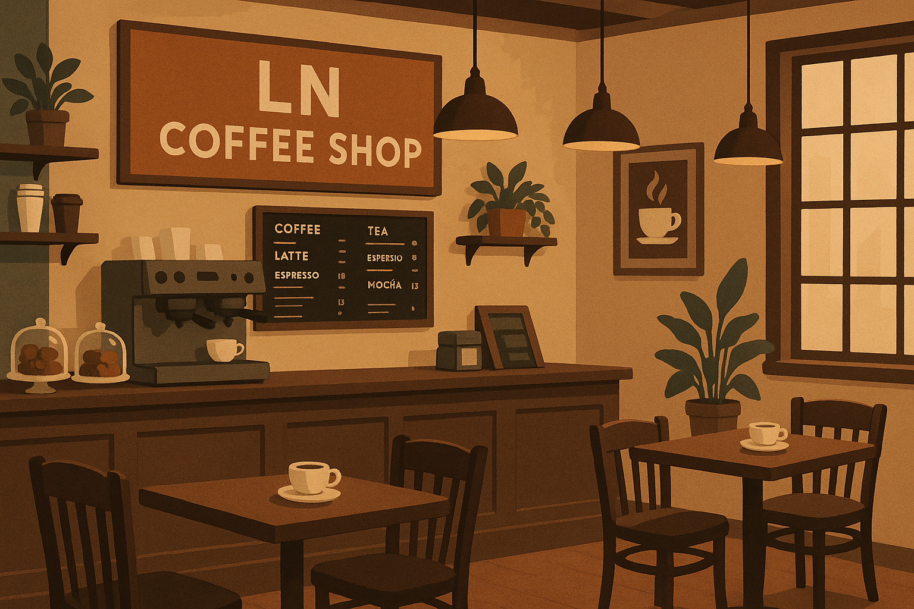

At LN Coffee Shop, coffee is more than just a drink—it’s an experience, a ritual, and a way to connect with the world around us. Since our doors opened, our mission has been to create a welcoming space where people can gather, unwind, and savor the simple joys of life.
We take pride in every step of our coffee journey, starting from carefully sourcing the finest beans from ethical and sustainable farms around the globe. Our expert roasters bring out the unique flavors and aromas of each bean, ensuring that every cup you enjoy is a masterpiece of taste. From a rich, bold espresso to smooth, creamy lattes and innovative seasonal specials, we craft our beverages with precision, creativity, and heart.
But LN Coffee Shop is more than just coffee. It’s a place where friendships are made, ideas are shared, and moments are cherished. Our cozy, thoughtfully designed interior provides the perfect backdrop for a quiet morning read, a productive work session, or a lively conversation with friends. Every detail, from the aroma that fills the air to the warm lighting and comfortable seating, has been carefully chosen to make you feel at home.
Beyond serving exceptional coffee, we are committed to fostering a community that values sustainability, quality, and connection. We offer locally sourced pastries and treats, support local artists, and continually seek ways to reduce our environmental footprint.
At LN Coffee Shop, we invite you to pause, breathe, and enjoy life’s simple pleasures—one cup of coffee at a time. Whether you’re a lifelong coffee lover or just beginning your journey, we promise an experience that delights your senses and warms your heart.
